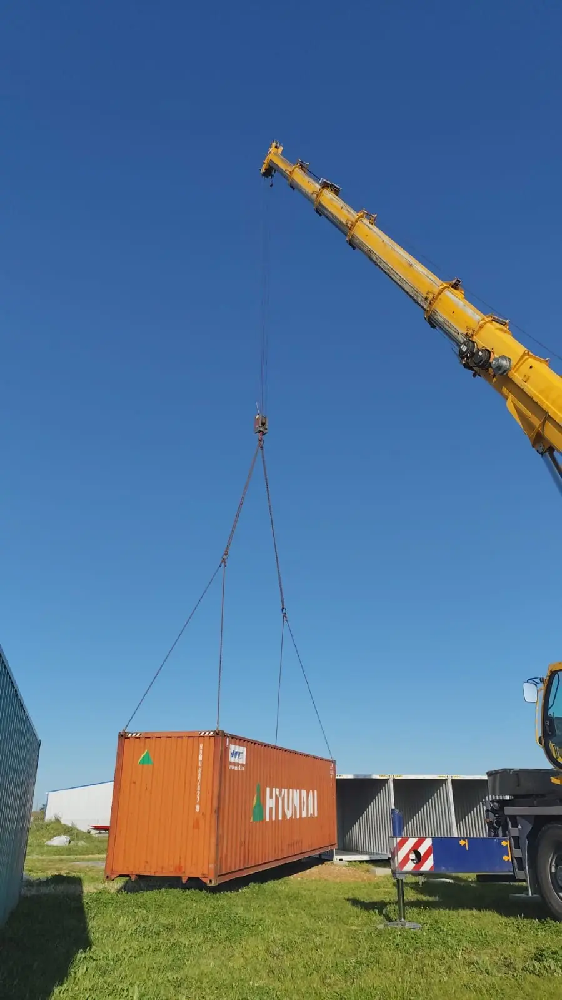
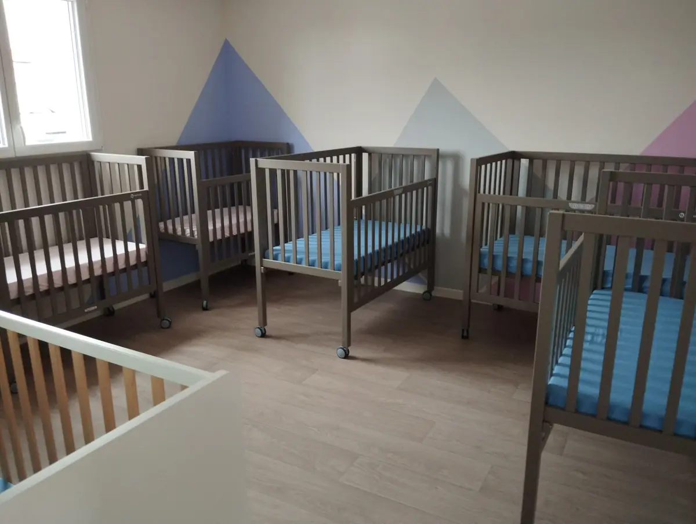
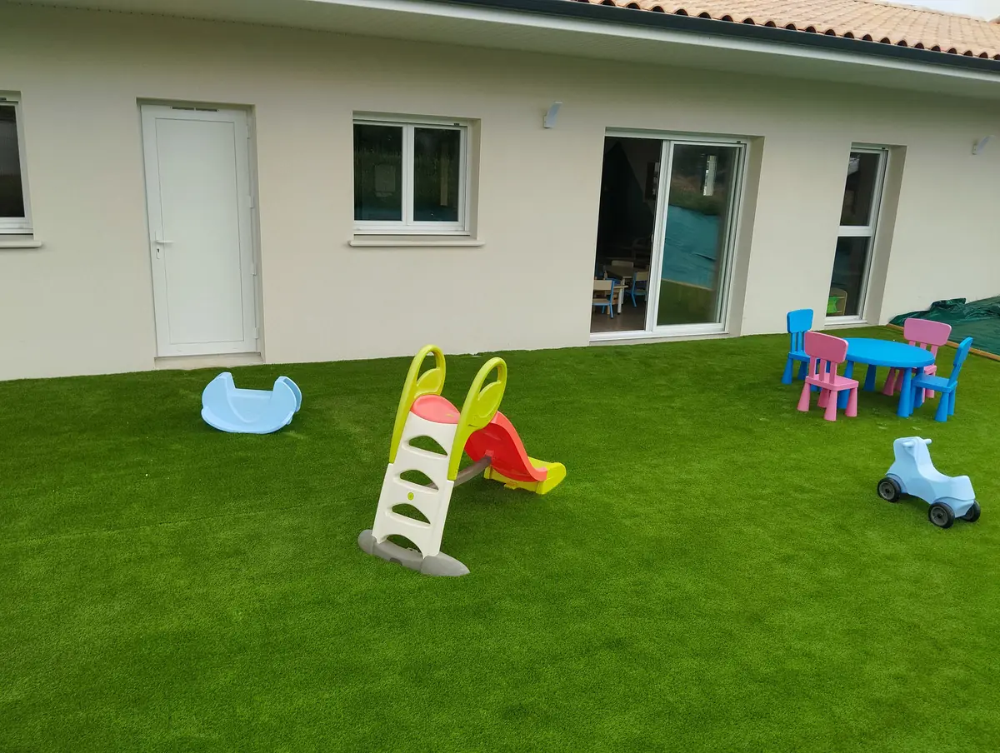
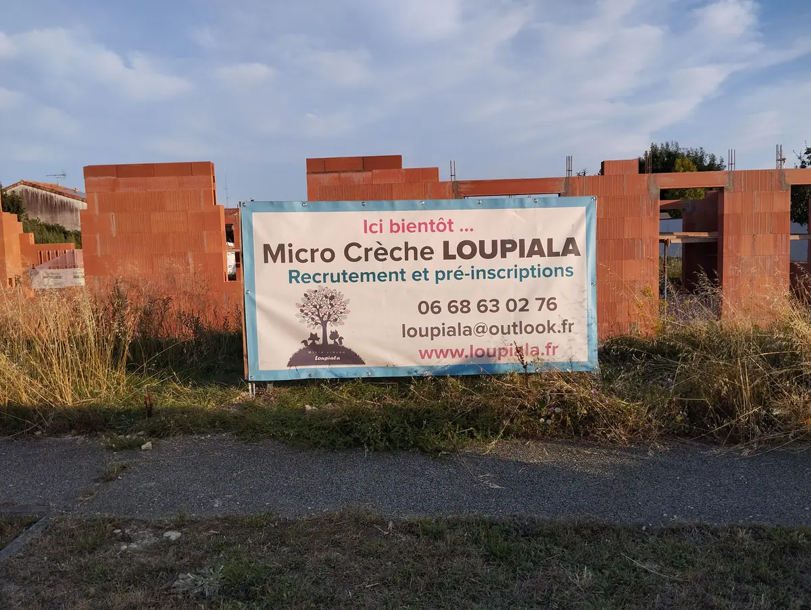
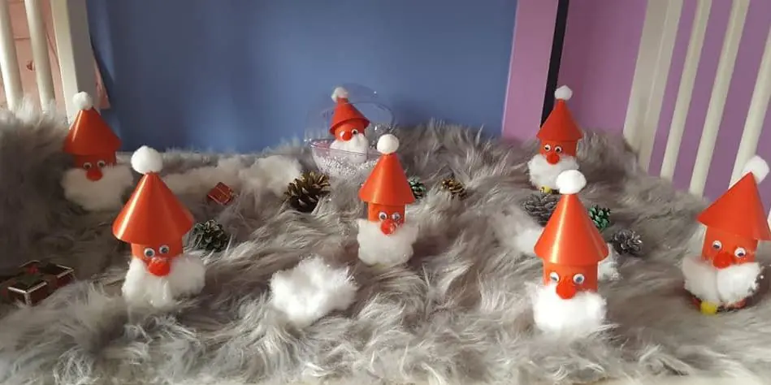
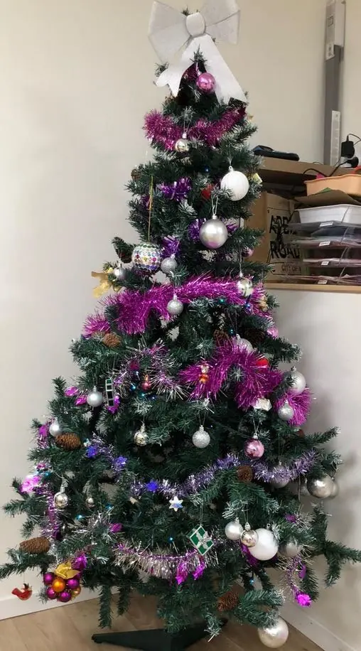
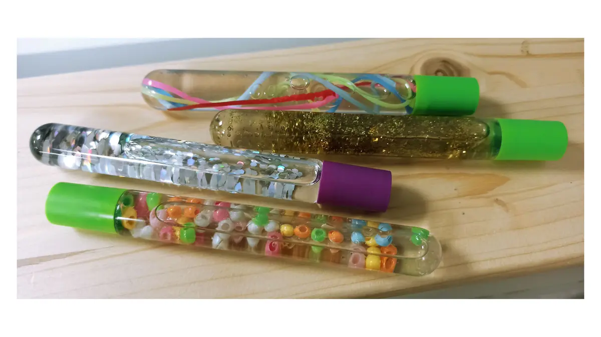
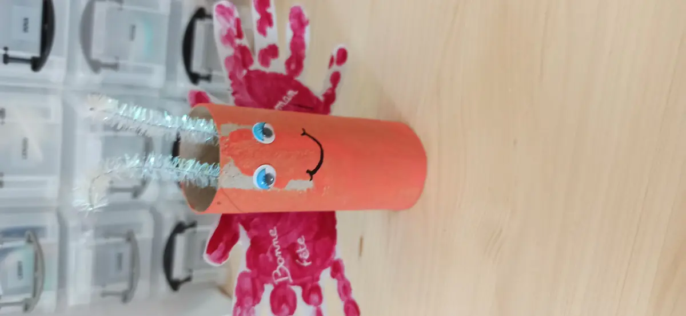
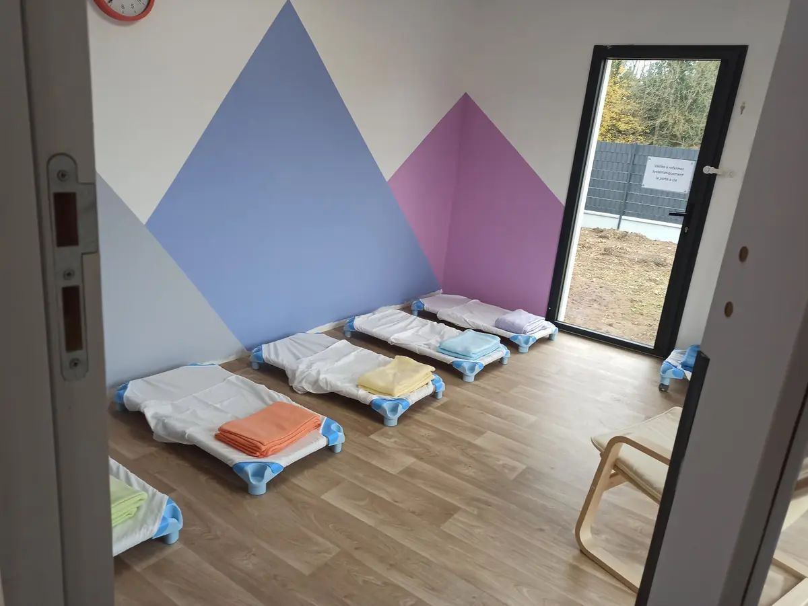

La micro-crèche du Thou ouvre le 31 août 2026
Les travaux avancent… et la date d'ouverture est fixée : ce sera le lundi 31 août 2026 !
Les inscriptions sont ouvertes et déjà bien entamées : faites vite votre demande sur notre page inscription.

Actualités
Ouvertures, chantiers, ateliers, fêtes : retrouvez ici la vie des crèches Loupiala. Et pour ne rien manquer, suivez-nous aussi sur Facebook.
Les travaux avancent… et la date d'ouverture est fixée : ce sera le lundi 31 août 2026 !
Les inscriptions sont ouvertes et déjà bien entamées : faites vite votre demande sur notre page inscription.
La construction est en cours et, nouveauté pour cette troisième crèche, elle est faite… en conteneurs maritimes ! Le bâtiment prend place dans l'extension de la zone du Fief Girard, au Thou.



Les travaux ont bien avancé, et nous sommes heureuses d'annoncer l'ouverture de Loupiala Mauzé-sur-le-Mignon le 2 septembre 2024 !
Les peintures seront faites sous peu, le sol posé… Nous avons hâte d'aménager ce petit cocon chaleureux.




Loupiala s'agrandit et voit naître une petite sœur à Mauzé-sur-le-Mignon ! Les travaux de construction sont en cours, pour une ouverture courant 2024.
Nous prenons d'ores et déjà les demandes de pré-inscription.

Après avoir fait le premier sapin de Noël de la crèche, les enfants ont participé à la décoration : autocollants aux fenêtres, petits Pères Noël, boules et bonshommes de neige.
Nous avons même rencontré le Père Noël en personne ! Il nous a rejoints après un petit spectacle musical… et a laissé des cadeaux au pied du sapin : plein de nouveaux jeux.


Régulièrement, selon l'humeur des enfants, nous proposons des moments de détente, de relaxation et de découvertes sensorielles. Le dortoir est plongé dans l'obscurité ; les enfants jouent avec de petites lumières ou découvrent de nouvelles matières avec la malle aux trésors et les bouteilles sensorielles.



Peinture, empreintes, pâte à modeler, transvasements, cuisine, plantations au potager… Le printemps a été riche en découvertes pour nos p'tits loups.



Nous sommes déjà en mars et devons préparer la rentrée de septembre : nous prenons les pré-inscriptions dès maintenant, afin de vous faire un retour en avril.
Les demandes restent possibles tout au long de l'année, au cas où une place se libérerait.
L'ouverture s'est bien passée : nous sommes maintenant au complet. L'équipe a pris ses marques et le temps de connaître nos p'tits loups — plus ou moins farceurs, coquins, curieux… Chacun s'adapte, découvre ses camarades, les jeux, les livres.
Les activités se mettent en place : premiers anniversaires, gâteau, salade de fruits, peinture, fresques, sable magique, pâte à sel… Les ateliers de langue des signes arrivent en avril, et avec les beaux jours, place au jardin : draisienne, toboggan, ballon, cabane et bulles !
Voici quelques photos de l'aménagement de la micro-crèche de Benon.



Le grand jour est arrivé : nous avons ouvert la crèche de Benon le lundi 18 janvier 2021 ! Toute l'équipe est ravie de rencontrer les enfants et leurs familles.
Appelez-nous du lundi au vendredi, de 7h45 à 18h30, ou écrivez-nous : nous répondons à chaque famille.